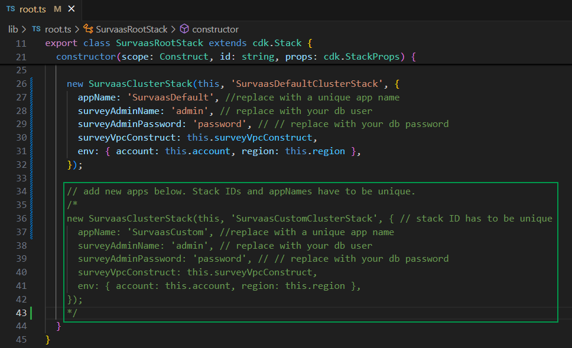

survaas_cdk
Survaas
About
This project offers a "survey-as-a-service"-solution by providing CDK code for a platform which lets you host online surveys in a serverlessly scalable container environment using AWS Fargate, store the response data in a fully managed Amazon Aurora Serverless v2 database cluster and analyze it from a AWS SageMaker domain according to your specific research interests.
General Overview

Getting started
Prerequisites:
- Node Package Manager installed on your local machine
- AWS CLI installed on your local machine (see https://docs.aws.amazon.com/cli/latest/userguide/getting-started-install.html for instructions)
- AWS CDK installed on your local machine (see https://docs.aws.amazon.com/cdk/v2/guide/getting_started.html for instructions)
- AWS Account which has been bootstrapped for CDK (see https://docs.aws.amazon.com/cdk/v2/guide/bootstrapping.html for instructions)
- Docker installed and running on your local machine
Deploy the infrastructure to you AWS Account
- Open AWS CLI and authenticate with an administrative user (see https://docs.aws.amazon.com/cli/latest/userguide/cli-chap-authentication.html for instructions).
- Open a command line in the project directory.
- Run
npm installto install the dependencies from the package.json file. - Set
CDK_DEFAULT_ACCOUNTandCDK_DEFAULT_REGIONas environment variables for the account id and region you wisht to deploy to. - Run
cdk deploy --allas authenticated admin user to deploy the survaas infrastructure to your AWS account. - In the AWS Management Console go to CloudFormation and verify that all the stacks deployed successfully.
Survey environment
- In the AWS Management Console go to EC2 and open the load balancer section.
- Identify the loadbalancer of your survey environment.

- Copy over the loadbalancer DNS name to a new browser tab.
- If the deployment worked as intended you should see the following screen:
- In your browser go to LOADBLANCER_DNS_NAME/admin.
- Enter the credentials for your survey application you set above. The default values are user: 'admin', password: 'password'.
- Go to "Create survey" and choose the "Import" tab.
- Browse into the "sampleData" folder of your local project directory, choose the "sample_survey.lss" file and upload it.
- Click "Go to survey", choose the settings tab and go to "Overview".
- Click on "Activate survey" and proceed.
- Open the survey URL in a new browser tab and fill in the survey if you like.

That way you can also share the surveys created by yourself.
Analytics environment
Prerequisites:
Since SageMaker in this setup is configured to authenticate with SSO you need an AWS Identity Center user in order to access your SageMaker domain. For further information see: https://docs.aws.amazon.com/singlesignon/latest/userguide/quick-start-default-idc.html.
- In the AWS Management Console go to "Amazon SageMaker AI" and under "Domains" select your survaas domain.
- Select the user profiles tab and assign a user to your domain.

- In the AWS access portal of the user you added select the "Applications" tab and open your survass SageMaker domain.

- Go to JupyterLab and create a new space.

- You can leave every option as default and just run the space.
- Open the space (under "Settings" > "Theme" you can switch on the dark mode if you prefer).
- Click "Upload files" on the left.
- In your local project folder navigate to the sampleData directory and upload all the files stored in the "sagemaker" folder.
- Open the "test_rds_connection.ipynb" Jupyter notebook. If you have left the appName of the SurvaasClusterStack as default you can just run the notebook as it is. Otherwise check the rds_instance_identifier, db_name and ssm_param_name at the bottom and change them according to your appName. How to change the appName and add new SurvaasClusterStacks is explained in the "Developer guide" section below.

- Open "load_data.ipynb" Jupyter notebook and check the rds_instance_identifier, db_name and ssm_param_name if you changed the appName of the SurvaasClusterStack.
- Run all cells in order to load some sample data to your RDS database cluster. This sample data mocks a result set of the customer segmentation sample survey mentioned above.
- Open "pca_sample.ipynb" Jupyter notebook and check the rds_instance_identifier, db_name and ssm_param_name if you changed the appName of the SurvaasClusterStack.
- Run all cells of the notebook in order to apply a principal component analysis to the sample data set which groups the data into different customer types.


This way you can analyze the response data of your surveys. The default table name of your repsonse data is "survaas_survey_{SURVEY_ID}". You get the survey id from the "surveys" section of your survaas application.

If you prefer the VS Code development experience over JupyterLab you can run your code in CodeEditor, as well.

Implementation details
Architecture
The following diagram was automatically created by CdkGraph on cdk synth.
Application Hosting
The survey application uses a pre-built container image stored in an ECR container registry and hosted on a ECS Fargate cluster. The loadbalancer is placed in a nested stack inside of the SurveyEcsStack of the CDK application. This way the loadbalancer can be deleted via CloudFormation without deleting the ECS cluster. The ECS task CPU and memory is set to the minimum default values, .25 vCPU and 0.5 GB memory, so you might want to consider increasing them in the SurveyEcsStack. The containers share a managed EBS volume of 15 gibibytes for data persistence. You may increase this default size there, as well.
Storage
The survey response data is stored in a RDS Aurora Serverless v2 cluster. The capacity is set to 0.5 miminmum and 2 maximum ACU. You can adjust these settings inside of the RdsStack. The database credentials are securely stored in AWS Secrets Manager.
Analytics
Data can be analyzed on a SageMaker domain which has direct access to the response data in the RDS cluster. The domain ExecutionRole uses the AmazonSageMakerFullAccess managed policy. You may want to restrict the permissions to meet your specific security policies.
Networking
Every SurvaasClusterStack is created in the same SurvaasDefaultVpc with 2 availability zones with two subnets, a private and a public one, respectively. Internet access is granted by a NAT gateway placed in a public subnet with a route to an internet gateway. For every SurvaasClusterStack there are four security groups: one for the ECS cluster, one for the loadbalancer, one for the RDS cluster and one for the SageMaker domain. All of them come with appropriately restricted in- and egress rules in order to properly isolate them from the resources of other SurvaasClusterStacks.
Encryption
The response data and the data of the Sagemaker domain are encrypted with separate customer managed KMS keys. The access permissions of the SageMaker domain ExecutionRole are granted via a corresponding IAM inline policy.
Developer guide
Documentation
For a cdk stack overview see index.html in the docs folder.
You can update the typedoc documentation for your changes with npx typedoc --plugin typedoc-plugin-missing-exports.
How to add a new SurvaasClusterStack to the app?
Since Survaas is meant as a platform solution you can add complete and separate survey environments with their own ECR container registry, ECS cluster, RDS cluster and SageMaker domain. In order to add a new SurvaasClusterStack go to "lib" > "root.ts" and initialize a new SurvaasClusterStack like the commented out lines in the picture below show. Just fill in a unique appName and initial credentials for your survey database.

By doing so you deploy a completely new survey environment in the same SurvaasDefaultVpc with different and isolated security groups for the ECS cluster, RDS database and SageMaker environment encrypted by two new customer managed KMS keys. A worthwhile future consideration might be to do new survey environment creation via AWS Service Catalog.
Licensing and attribution
Licensing
This repository includes code and resources that are licensed under multiple open-source licenses. Below is a summary of the licensing information:
- docker/Docker.survey: Licensed under GNU General Public License version 3 (GPL-3.0).
- docker/docker-entrypoint.sh: Derived from a GPL-3.0-licensed project.
- docker/Sea_Green_custom: Originally licensed under GNU General Public License version 2 (GPL-2.0) or later. Used under the "or later" clause, permitting compatibility with GPL-3.0.
- docker/survey_template/layout_survey_list.twig: Originally licensed under GNU General Public License version 2 (GPL-2.0) or later. Used under the "or later" clause, permitting compatibility with GPL-3.0.
- docker/SurveyActivator.php: Originally licensed under GNU General Public License version 2 (GPL-2.0) or later. Used under the "or later" clause, permitting compatibility with GPL-3.0.
The combined work, including the container image built using these files, is distributed under the terms of GPL-3.0.
Attribution
The following files in this repository are derived from other open-source projects:
docker/Docker.survey and docker/docker-entrypoint.sh
- Source Repository: adamzammit / limesurvey-docker
- License: GPL-3.0
- Modifications:
- Added code for limesurvey trademark removal to Docker.survey file
- Changed docker-entrypoint.sh to remove any sitename from application/config/config.php
docker/Sea_Green_custom (GPL-2.0 or later)
- Source Repository: LimeSurvey / LimeSurvey
- License: GPL-2.0 or later
- Modifications:
- Removed LimeSurvey trademarks from default admin theme
docker/survey_template/layout_survey_list.twig (GPL-2.0 or later)
- Source Repository: LimeSurvey / LimeSurvey
- License: GPL-2.0 or later
- Modifications:
- Removed footer from survey list layout
- Removed header logo from survey list layout
docker/SurveyActivator.php (GPL-2.0 or later)
- Source Repository: LimeSurvey / LimeSurvey
- License: GPL-2.0 or later
- Modifications:
- fixed bug concerning default_storage_engine after MySql update
Notes on License Compatibility
The original files are either licensed under GPL-3.0 or GPL-2.0 including the "or later" clause, which allows their use under GPL-3.0. As such, all components of this project have been combined and distributed under GPL-3.0 to ensure license compatibility.
How to Comply with the License
If you redistribute this repository or derivative works:
- Include a copy of the GPL-3.0 license.
- Provide attribution to the original authors of the included files.
- Share any modifications to these files under the same license.
For more details, see the GPL-3.0 license text.
Note on using LimeSurvey
This project relies on LimeSurvey as web application for running online surveys. If you deploy the architecture to your AWS account you install LimeSurvey to your Fargate containers. LimeSurvey is open source software under the GNU General Public License v2, but comes with restrictions concerning its trademark. So, please make sure you comply with the LimeSurvey License & Trademark Guidelines.